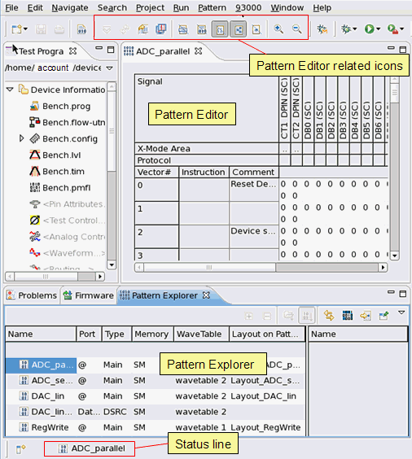

Pattern Editor
With the Pattern Editor you can:
- Display the patterns of the currently loaded setup
- Edit the patterns
- Analyze errors

The toolbar of the Pattern Editor provides the following icons:
Icon |
Function |
|---|---|

|
Toggles between Collapsed and expanded mode. Only the current primary pattern (start label) can be viewed in expanded mode. Expanded mode shows the cycles as they are executed. Collapsed mode does not display the dynamic behavior of the sequencer instructions. |

|
Available only for bursts in pattern editor. Enables/disables the expanding ( |

|
This button can be used when Displaying failure data in expanded mode (see Collapsed and expanded mode). If you have acquired a large number of failures, the number of annotations is limited. When you mark a line in Pattern Editor, you can generate the annotations around the marked line by pressing this button. |
Switches to horizontal pattern view. |
|

|
Aligns the display with another result analysis tools, when displaying failure data in expanded mode. |

|
Hides/shows (toggles) all header instructions in the current editor. |

|
Hides/shows (toggles) all vectors in the current editor. |

|
Hides/shows (toggles) all x-mode areas in the current editor. |
Hides/shows (toggles) all protocols in the current editor. |
|

|
Hides/shows (toggles) all header comments in the current editor. |
Zooms in. |
|
Zooms out (see also paragraph below). |
|
Jumps to the next annotation, when displaying failure data in expanded mode. |
|
Jumps to the previous annotation, when displaying failure data in expanded mode. |
|

|
Navigates backwards. |
Navigates forwards. |
Most of the functions you can also find in the main menu, for example Navigate > Next Annotation/Previous Annotation corresponds to theicons .
The status line of the Pattern Editor is at the bottom of the SmarTest main window.
Zooming out
Starting at a certain zoom-out level, the zooming combines multiple vector rows or cycle rows into a single row, and the vector/cycle-count numbering changes from continuous (1, 2, 3, 4, 5, ...) to discontinuous, for example 1, 3, 5,... or even to 1, 5, 9, .... The vector data (including error information) of the hidden vector/cycle rows disappear. To see them you have to zoom in again.
Functional changes
- Introduced before SmarTest 6.3.2
- SmarTest 7.0.3: New shortcut menu to edit vectors with Signal Analyzer.
- SmarTest 7.1.3: Enhanced control of the editor data table.
- SmarTest 7.5.1: After a rerun of a test program, the existing positions of any open pattern editor are maintained.